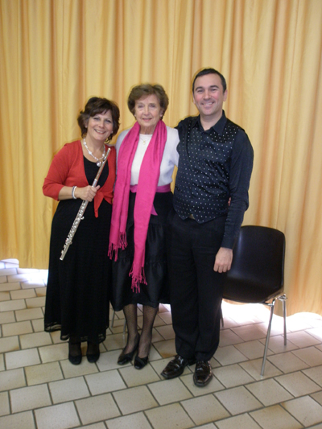
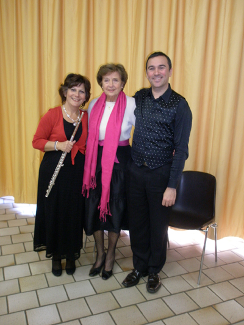

Les
Concerts de
Daniela 
======================================

===========================================
Sabato 16 Giugno ore 19,30 con contributo di euro 10,00
è gradita prenotazione - posti limitati
Concerto per Flauto e chitarra con il
duo Daniela Pisano e Santy Masciarò
presso Musica a Manetta
via dei Carracci,10
tel. 02 97374573
info@musicamanetta.it
segreteria@musicamanetta.it
===========================================
"Ensemble Eurydice"
Daniela Pisano Flauto - Flute
Mauro Righini viola - alto
Enrico Barbagli clavicembalo - clavecin
Musiche di - musique de - music of:
Bach, Galuppi, Leclair, Scarlatti, Telemann.
Domenica - Dimanche - Sunday
20 Maggio - Mai - May 2012
alle ore 16 - à 16 h - at 4 p.m.
"Ente Concerti" Castello di Belveglio
Belveglio (Asti)
entrata libera
=========================================================================================================
Chers amis,
Arcaduemila Labarca
et l'espace sont heureux de
présenter le spectacle
"SONNETS
cette donation"
de William Shakespeare
traduit par Robert
Manteaux inspirés par
William Shakespeare
Une soirée de mots comme
un cadeau. Quels sont les
mots? Dix Sonnets
de Shakespeare, le premier
en anglais, puis traduit par
Robert Coats, et douze
sonnets (certains en
élisabéthaine métrique)
que le traducteur, poète, à
son tour, a écrit sur
l'amour. Comme un
cadeau? Les mots écrits
sont parlées. Mots de
l'auteur Vieux sont
traduits par l'auteur contemporain,
et lu par lui,
en collaboration avec
d'autres lecteurs. Auteur
contemporain de
mots, de l'inspiration
certaine taxe ancienne,
lu par les
trois mêmes
éléments. Un jeu
d'écritures, des langues et
des voix, il a
été une grande présence,
élégant et prodigieuse,
une Dame noire.
Avec Anna
Bonel, Candice
Earle Robert
Hutton et Couettes
Flûte Daniela
Pisano
Piano Henry
Barbagli
Sunday, Avril
22, à 21, à
l'espace dans la Via
Marco d'Labarca Oggiono
1, Milan
NOUS VOUS ATTENDONS!!!
Réservation obligatoire et
informations au:
339.3911862
Afficher seulement approprié
pour les adultes

==================================================================================

=================================================

=============================================================================================

=============================================================================================

Concert
Samedi 10 Avril 2010 à 20h,30
Dimanche 11 Avril à 15h
Orchestre et coeur Europa Voce direction Till Aly Eglise Notre Dame de la Croix de Menilmontant 3, Place de Menilsmontant - Paris 75020
=========================================
=======================
MASTERCLASS DI FLAUTO
Masterclass de flute
Flute's Masterclass
Daniela Pisano flute
Daniela Colceriu piano
5 - 8 /Marzo/ 2010
5-8 /Mars/2010
March /5-8 / 2010
LICEUL de ARTĂ “SABIN DRĂGOI” ARAD
B-dul
Revoluţiei Nr.20 cod.310139
Telefon/fax:
0257/281645
Contabilitate:
0257/270771
E-mail:
lic_sabindragoi@rdslink.ro
Cliquez sur le lien ci-dessous pour voir l'interview:
href="http://www.infotv.ro/news/10-03-2010/flaut-sabin-dragoi"
==========================================
A l'occasion de
==================================================== Samedi
12 décembre 2009 Salle Polyvalente à 21h San Vittore Olona (MI) -
Italie "Les nuages et le rossignol" Contes en musique Ensemble Eurydice flute, alto, piano, voix
recitante.... Musique de:.L. Maggioni, M.
Priori, P. Ugoletti Presentè par:."il SETTICLAVIO
associazione artistica non profit"
==========================================
"Concert
dans le jardin"
30 Aout à
15h.
musique de:
Bach, Giordano, Chopin, Faure, Ibert.
Im
Garten von
Grazyna und Andreas
Brabandstrasse 48
22297 Hamburg
Tel 040-5111946
Sontag 30. August 2009
um
15 Uhr
„Garten Concerto“
klassisch Musikkonzert
« ENSEMBLE EURYDICE »
Daniela PISANO, Flöte
Uly E.NEUNENS Tenor
Jonathan GRIFFITHS, Klavier
Werke von
Bach,
Chopin, Giordano, Faure, Ibert
Tottori (Japon)
"Tottori
Bunka Hall"
Le 6 juin 2009
à 18h,30
Daniela Pisano flute
Romualdo Barone clarinette
Kikuko Kurose
piano
http://www.torikenmin.jp/a-tottoribunka/hall.htm
============================================================================================================= 18 avril à 21h,00
============================================================================================================= concert 21 mars 17h Maison dans la Vallèe Avon (77) France
flute Daniela Pisano baryton Olivier Ayault harpe Huguette Geliot piano Helene Boscheron concert 4 avril à
20,30 concert 5 avril à 15h Eglise St. Roch
296, rue St-Honoré 75001 Paris - France
Orchestre "Europa Voce" diretta da Till Aly flauto solista Daniela
Pisano
-----------------------
Concerts
camera
flauto
Daniela Pisano
clarinetto
Romualdo Barone
pianoforte
Yoichi Tajiri
23 agosto
2008 ore 14,30
Conservatory
Chez Mozart
Kyoto -
Ashiya-Shi
Japan
Tel:
075-621-6339
programma:
Bottesini,
Donizetti, Braga, Schostakovich, Tajiri,
Rossini, Weber
-------------------------------------------------------------------------------------
Concert
21 juillet 2008
fête de la musique au Lycée français de
Hambourg
à 12h,20
Aula du Lycée français
Hartsprung 22529 Hamburg
"Ensemble Eurydice"
Daniela PISANO, Flöte
Olivier AYAULT, Bariton
Jonathan GRIFFITHS, Klavier
Santy MASCIARO’, Gitarre
Ouvres de:
Bach, Gluck, Rossini,
Donizetti, Verdi, Piazzolla, Mancini...
---------------------------------------------------------------------------------------------------
Samstag 21. Juni 2008
um 19 Uhr
Im Garten von
Grazyna und Andreas
Brabandstrasse 48
22297 Hamburg
Tel
„Garten Concerto“
Daniela PISANO, Flöte
Olivier AYAULT, Bariton
Jonathan GRIFFITHS, Klavier
Santy MASCIARO’, Gitarre
Werke von Bach,
Gluck, Rossini, Donizetti, Verdi, Piazzolla, Mancini...
Memorial Day
Mercredi, Janvier 27, 2010 h.
20:30
Basilique de San Lorenzo Maggiore
C.so Porta Ticinese - Milan
La banalité du mal, le mal pur:
Soirée de lecture et de musique pour commémorer l'Holocauste en Europe
par Egidio Bertazzoni et Antonella Garello
Juifs, "Tsiganes, les Témoins de Jéhovah, les homosexuels, les opposants
politiques et les dissidents, les handicapés et les malades, les prisonniers de
guerre et de civils slaves ...
Millions ont été victimes de la politique de ségrégation et d'extermination
pendant le "black douze ans» de l'Allemagne nazie.
Au cours de la "Journée du Souvenir", la basilique de San Lorenzo Maggiore hôtes
d'une soirée de lectures et musique en souvenir de la plus grande tragédie de l'Europe
moderne.
La mémoire des victimes de persécution et de tours, toutefois, inévitablement,
dans un rappel d'actualité, que la démocratie, la liberté personnelle, d'acceptation,
la tolérance restent des valeurs à partager: les valeurs qui aujourd'hui plus
que jamais, chacun de nous est appelé à garder et défendre dans le premier
personne.
Dans la plupart des cas, la brutalité du régime nazi ont été rendues possibles
par des individus tout à fait normal, qui n'ont pas été en mesure de reconnaître
à temps la nature de ce régime, et ils y ont adhéré, même pour un simple cas d'inertie,
de la quiétude
vivants, pour des raisons politiques ou pour des gains personnels.
Les morceaux sont lus et interprétés par ANNA BONEL, ADA LUCIA Cherubini et
Alberto Redaelli.
ENSEMBLE EURYDICE:
DANIELA PISANO, flûte; LUCA Cuomo, flûte, violon Albert Intrieri Mauro Righini,
alto; Gianantonio ROSSI, violoncelle.
La musique de Bach, Mozart, Telemann et Vivaldi
ARCADUEMILA est une association culturelle créée par des personnes, des
travailleurs culturels et les professionnels travaillant à promouvoir l'échange
et la contamination par diverses formes d'expression: théâtre, danse, musique,
peinture, photographie, cinéma, littérature
.
ARCADUEMILA organise des cours de théâtre, de danse et de musique pour enfants,
adolescents et adultes, favorise le territoire de spectacles de Milan, des
ateliers, des soirées et des réunions sur des thèmes culturels et d'actualités.


à Cortiglione (Asti) Italie
à l'Hôtel de Ville 
flûte Daniela Pisano
saxophone Walter Geromet
piano Luigi Palombi
 
